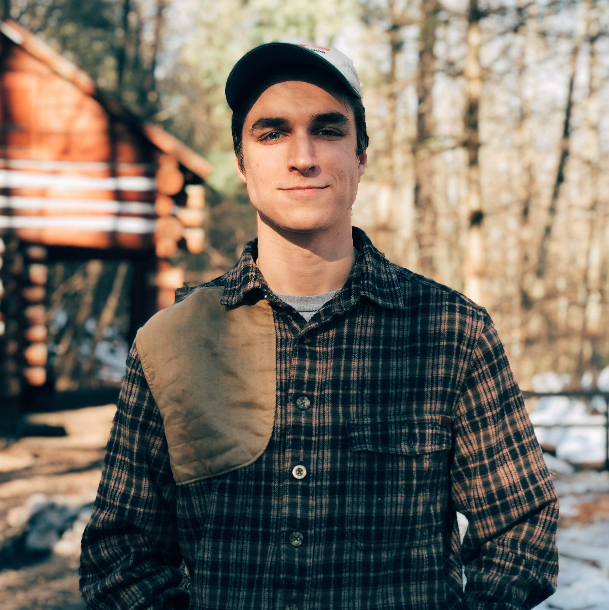
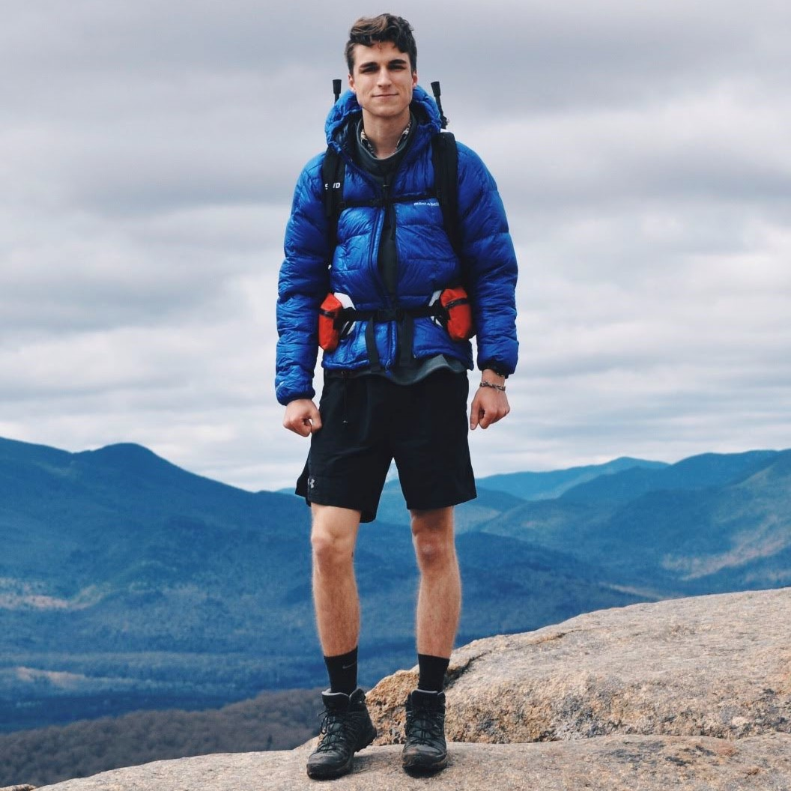

Pennsylvania native studying Computer Science Engineering at The Ohio State University. Passionate about
learning - mostly mathematics and computer science. Within CS my interest is mostly in algorithms and
artificial intelligence, though my experience is in building web applications.

